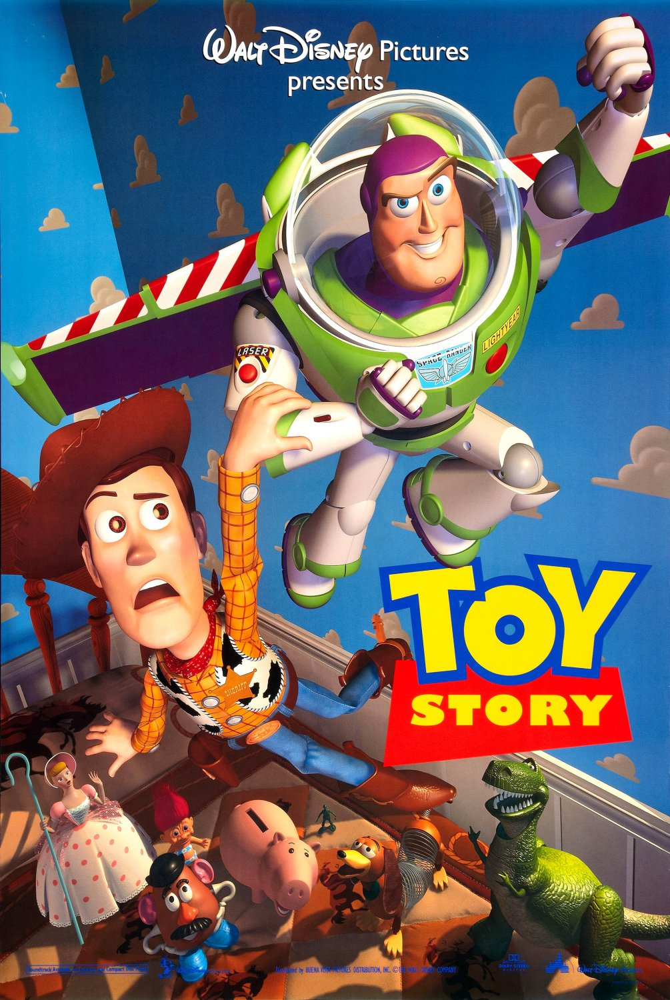

Toy Story
68th Academy Awards
(Oscars 1996)
3 Nominations, 1 Award*
| Nominations | ||
|---|---|---|
| Category | Nominees | Result |
| Writing (Screenplay Written Directly for the Screen) | Alec Sokolow, Andrew Stanton, Joel Cohen, Joe Ranft, John Lasseter, Joss Whedon, and Peter Docter | Nominated |
| Music (Original Musical or Comedy Score) | Randy Newman | Nominated |
| Music (Original Song) "You've Got A Friend In Me" |
Randy Newman | Nominated |
| Special Achievement Award | John Lasseter | Won |